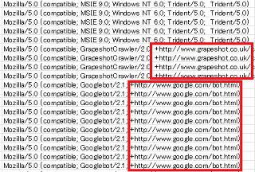
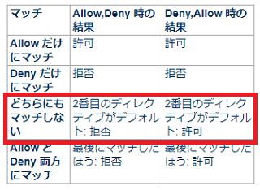
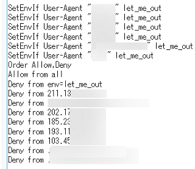
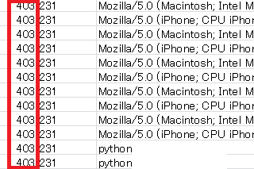
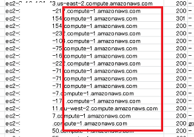

クローラーアクセスの確認方法
検索エンジンなどのクローラーによるアクセスは、サーバーのアクセスログで確認することができます。Google analyticsのようなJavascriptタイプのアクセス解析ではチェックできないため、アクセスログで確認するとよいでしょう。
チェックする際、ログをExcel等などに貼り付けてユーザーエージェントで並べ替え、botなどの文字列をチェックすると分かりやすいです。ブラウザもクローラーも共に「Mozilla/5.0」のユーザーエージェントで始まっていることが多いですが、クローラーロボットの場合はクロールの目的などが記載されているURLが付いていることが多いです。
例えば、Googleボットの場合は以下のようなログになっていますが、URLにてこのクローラーロボットの詳細が記載されています。
"Mozilla/5.0 (compatible; Googlebot/2.1; +http://www.google.com/bot.html)"
このようなURL付きのアクセスログをチェックしていくとよいでしょう。

当サイト運営者が確認したクローラーのリスト一覧はこちらをご参照ください。
→ Webクローラーの比較一覧
また並べ替えた際、IPアドレスとセットで確認してみて、明らかに他のアドレスと違う場合は偽装されている可能性があります。つまり、「わたしはグーグルのロボットです。」と名乗ってはいても、実はグーグルボットではない可能性もあります。
その際は「IPアドレスを逆引き」して本物かどうかを確認してみることをおすすめします。
クローラーのアクセスを拒否する方法
クローラーによるアクセスを拒否する場合、robots.txtで指定するのが一般的です。
robots.txtは強制ではないため、なかには書いてることを守らないクローラーもいますが、大手のクローラーは概ね守ってくれる傾向にあります。
そのほか、.htaccessで「ユーザーエージェント」や「ホスト名」、あるいは「IPアドレス」を指定する方法もありますが、クローラーの「IPアドレス」については動的に変更になる可能性があるため、ユーザーエージェントの方が確実かもしれません。
- robots.txt → 効き目にバラツキがある
- .htaccessで「IPアドレス」→ 変更になる可能性がある
- .htaccessで「ホスト名」→ 無害なクローラーまで拒否する可能性がある
- .htaccessで「ユーザーエージェント」→ 使い勝手がよい
ただし、この.htaccessで拒否する場合は難しいです。
設定を間違えると、逆にロボットのみを許可して通常のブラウザのアクセスを拒否してしまうリスクがあるため、できるだけrobots.txtで指定することをおすすめします。
.htaccessで強制的にクローラーを拒否する方法
もし.htaccessで強制的に拒否する場合、Apache公式サイトのAllowとDenyディレクティブの箇所にて、「全てのアクセスを拒否してから、let_me_inで指定したUser-Agentを許可する例」が紹介されていますので、そちらを参考にされることをおすすめします。
User-Agentで「拒否する場合」はこれの逆になります。
■.htaccessで「拒否」する場合の例
SetEnvIf User-Agent "ロボット１" let_me_out
SetEnvIf User-Agent "ロボット２" let_me_out
Order Allow,Deny
Allow from all
Deny from env=let_me_out
つまり、「Order Allow,Deny」を指定したのち、「すべてのアクセスを許可（Allow from all）してから、let_me_outで指定したUser-Agentのロボットを拒否する」という意味になります。
■「Allow,Deny」と「Deny,Allow」の順序の違い
この「Order ほにゃらら」の順序が重要ですが、「Order Allow,Deny」はデフォルトで拒否、「Order Deny,Allow」はデフォルトで許可の違いがあります。
上記の公式サイトには以下の記述があり、単に「Order ほにゃらら」のみを指定して「Allow from」などを何も記述しなかった場合、どちらにも該当しなくなりますが、この場合は２番目がデフォルトになります。

つまり、「Order Allow,Deny」の場合は２番目の「Deny」がデフォルトになり拒否、「Order Deny,Allow」の順番の場合は２番目の「Allow」がデフォルトになり許可という意味です。
- 「Order Allow,Deny」→ デフォルトでDeny
- 「Order Deny,Allow」→ デフォルトでAllow
実際に試してみると分かりますが、単に「Order Allow,Deny」のみを記載した場合はサイトが表示されないのに対し、「Order Deny,Allow」のみの場合はサイトが表示されるはずです。
そのため、上記のように「Order Allow,Deny」を指定したあとは、必ず「Allow from all」を忘れないようにすることをおすすめします。
また、拒否するボットは「Allow from all」と「Deny from env=let_me_out」で両方にマッチしますが、「Order Allow,Deny」の場合は「最後のマッチした方：拒否」が適用されて拒否される仕組みになります。
例えば、当サイトではユーザーエージェントのほか、IPアドレスやホスト名なども組み合わせて以下のように設定しています。

すると、アクセスログではこのように「403 Forbidden」で出力されます。

ちなみに、「Order Deny,Allow」がデフォルトで許可なら、「Allow from」を省略して以下のように書けそうな気もしますが、あまり一般的ではないかもしれません。
Order Deny,Allow
Deny from env=let_me_out
特定のホスト名を一括で拒否しつつ、このホストを利用している特定のクローラーのみを許可するといった場合にはこのような記述方法をすればよいかと思います。
また、上記の公式サイトでは「user-agent の文字列が KnockKnock/2.0 で始まるブラウザのみがアクセスが許可され、」とあるため、user-agentを完全に指定しなくても制御できますが、そのロボットに特有の文字列のみを使用し、うっかり他のロボットまで拒否してしまわないように注意しましょう。
例えば、"Mozilla/5.0 (compatible; Examplebot/2.1; +http://www.example.com)"などといった場合、「SetEnvIf User-Agent "Examplebot" let_me_out」のように指定します。
.htaccessで指定した後はサイトが表示されるかを確認し、実際に設定が反映されているかをアクセスログでも確認してみることをおすすめします。
Webスクレイピング・クローラーの見分け方
一般的なクローラーはuser-agentで身元を名乗ってきますし、概ねサーバーに負担がかからないような配慮がされているため、それほど問題はないかと思います。
けれども、最近ではPython（パイソン）などを利用したスクレイピングと呼ばれる自動収集のロボットが大量にやってくることも多いです。サーバーのリソースを消耗してしまう場合、サイトの読み込み速度が低下してしまうため、何らかの対処をしておくとよいでしょう。
■スクレイピングクローラーの特徴
- ユーザーエージェントに「Python」や「Scrapy」などの文字列がある
- リファラが空白な大量のアクセス
- 月単位でみて同一IPアドレスからの大量のアクセス
- AWSなどのクラウドサービスからのアクセス
このようなアクセスがある場合、もしかして？スクレイピング・クローラーなのかもしれません。
例えば、「ec2-～.compute.amazonaws.com」などからのアクセスはあやしいケースが多く、これらのアクセスはリファラが空白なケースが多いです。

もちろん、アマゾンやGoogle、マイクロソフト自体が何かをやっているわけではなく、クラウドサービスを利用しているユーザーが作成したボットになりますが、あまりに大量なアクセスの場合は何らかの対処が必要かもしれません。
ただし、無料SSLの「Let's Encrypt」などでもAWSのホストから認証ロボットがやってくるケースもあり、ホスト名で一括ではじいていると認証が失敗してしまうかもしれません。
また、「～.bc.googleusercontent.com」については、このドメインはGoogleウェブキャッシュの「webcache.googleusercontent.com」でも使用されており、ドメインごと拒否すると支障が出てしまう可能性があります。加えて、「google-proxy-何とか.google.com」についても、こちらは通常のブラウザによるアクセスになるため、うっかり拒否してしまうと通常のアクセスも拒否してしまうことになりかねません。
また、「Deny from ホスト名」でドメインごと拒否した場合、レンタルサーバー会社によっては「HostnameLookups」でログがホスト名も表示する様式になってしまい、IPアドレスから逆引きしてしまうため、サーバーのパフォーマンスが低下してしまうかもしれません。
そのため、あえてノーガードで何も対策しないという選択もありますが、アナリティクスなどのデータでサイトの表示速度が低下したと感じた場合にはチェックしてみるとよいでしょう。
次のページ → Webクローラーの比較一覧